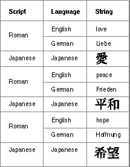
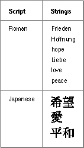
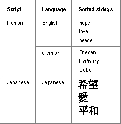

Sorting Strings in Different Languages
Strings in the same language must be sorted according to that language's sorting rules; information about these rules is found in resources that belong to that language's script system.However, if the strings are in two different languages or writing systems, sorting order is also governed by rules about the order among languages or writing systems. For example, an application might need to sort names in English, French, and German, or it might need to sort an index of English and Japanese names written in Roman and Katakana characters.
If you only need to sort strings from a single language in your application, you don't need to read this section or use the routines that are described here. You can skip ahead to the section "Sorting Strings in the Same Language," which begins on page 5-12.
When you sort strings in different languages, you must use routines that work with script-sorting and language-sorting information. The script-sorting (
'itlm') resource contains tables that define the sorting order among the languages or writing systems in each script system and among the different script systems that are available. It also shows the parent script for each language, the parent language for each region, and the default language for each script. TheScriptOrderfunction, which determines the sorting relationship between two script systems, and theLanguageOrderfunction, which determines the sorting relationship between two languages, use the tables in the script-sorting resource to determine their results. For more information on the script-sorting resource, see the appendix "International Resources" in this book.To sort two Pascal strings in different languages, you begin by calling the
StringOrderfunction. (You can use theTextOrderfunction to compare two text strings; it operates in the same way as doesStringOrder.) TheStringOrderfunction first calls theScriptOrderfunction; if the script codes of the two strings are different, thenStringOrderreturns a result indicating the sorting relationship between the two script codes. For example, if the first string is from a Japanese script system and the second is from a Thai script system, then the second string comes before the first according to the tables in the script-sorting resource.If both strings come from the same script system,
StringOrderthen compares their language codes by calling theLanguageOrderfunction. If the language codes of the two strings are different, thenStringOrderreturns a result indicating the sorting relationship between the two language codes. For example, if the first string is in English and the second is in German, then the first string comes before the second according to the tables in the script-sorting resource.Finally, if the script codes and language codes for both strings are the same, then
StringOrdercompares the two strings using one of the comparison functions described in the next section, "Sorting Strings in the Same Language."If you need to sort a collection of strings, you can choose to implement your sorting algorithm so that it uses
StringOrderorTextOrder, or you can build a list for each language and/or for each script system and sort each list independently. If you want to useStringOrderorTextOrder, you need to store each string so that you can easily access its script code and language code during the sort.It is usually desirable to sort all strings from a script system together, using the sorting rules that are associated with the current language for that script on the machine (and ignoring the different sorting rules for the different languages). For example, if you are sorting German, French, and English strings together for a system in England, you usually want the English sorting rules to be applied to all of those strings. In some cases, it may be more efficient to build a list for each language by using the language code of each to determine to which list it belongs. After building a list for each language, you can sort each with an algorithm that uses one of the comparison functions described in the next section, "Sorting Strings in the Same Language."
Figure 5-3 shows a collection of strings from different languages that need to be sorted.
Figure 5-3 Strings in different languages in one list

In Figure 5-4, the strings have been sorted into two lists: one for each script system. The Roman script system strings have been sorted according to the sorting rules for English, which is assumed to be the current language for the script in this example.Figure 5-4 Strings in different languages sorted by script

Figure 5-5 shows the same strings separated into three lists: one for each language.
Each list has been sorted independently by applying the sorting rules for a language. The language lists in each script system have been ordered by calling theLanguageOrderfunction.Figure 5-5 Strings in different languages sorted by language within script
